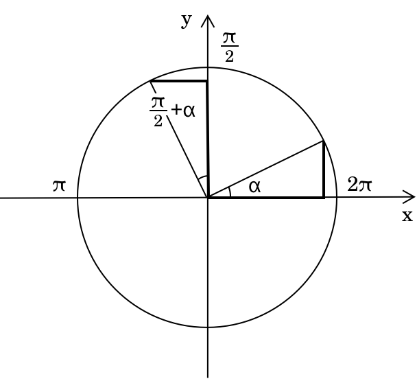
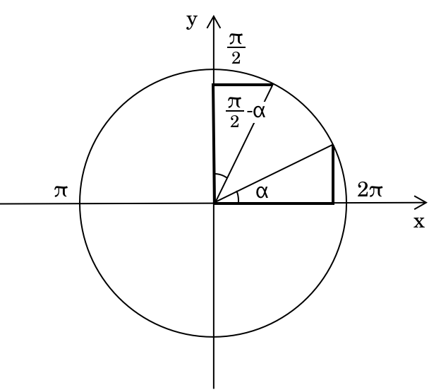
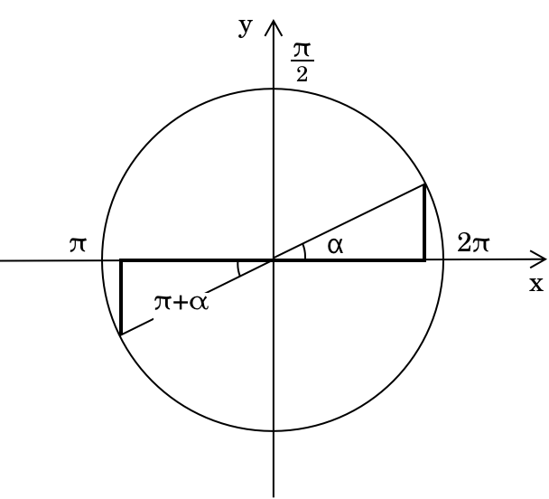
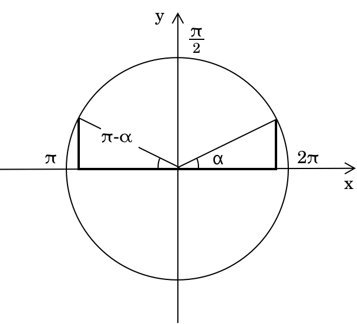
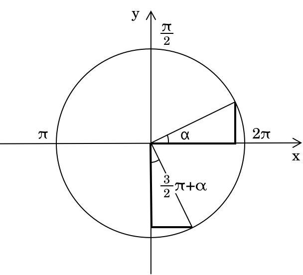
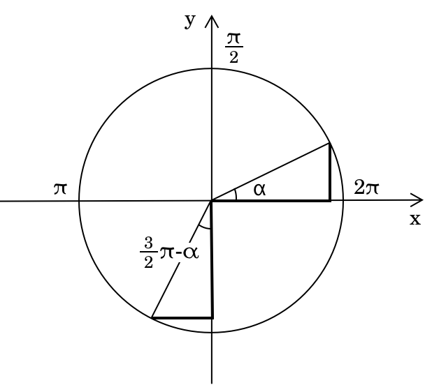
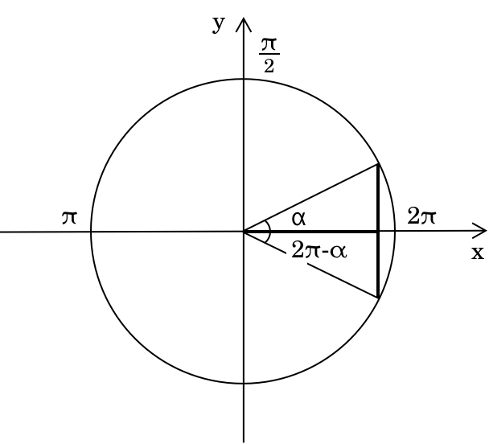

Формули зведення та зведені кути
Використання допоміжних кутів для перепису кутів
Метод допоміжних кутів ґрунтується на сімействі тотожностей, які часто називають формулами зведення, що дозволяють переписувати тригонометричні вирази з негострими кутами через відповідний гострий кут у першій чверті. Коли кут розміщено на одиниковому колі, його чверть визначає, як мають бути скориговані знаки синуса, косинуса, тангенса та котангенса. Ці тотожності застосовуються до кутів вигляду
\[
\frac{\pi}{2} \pm \alpha,\quad \pi \pm \alpha,\quad \frac{3\pi}{2} \pm \alpha,\quad 2\pi – \alpha,\quad \ldots
\]
і дозволяють виразити кожну тригонометричну функцію таких кутів через відповідне значення при \( \alpha \), у поєднанні з правильним знаком, визначеним чвертю.
Часто корисно зібрати ці результати в один огляд. У таблиці нижче наведено знаки \( \sin \), \( \cos \), \( \tan \) та \(\cot\) для найпоширеніших форм кутів, що зустрічаються у формулах зведення, із зазначенням відповідних чвертей та отриманого знака кожної тригонометричної функції:
| Форма | Чверть | \( \sin \) | \( \cos \) | \( \tan \) | \( \cot \) |
|---|---|---|---|---|---|
| \[ \frac{\pi}{2} \pm \alpha \] | I / II | \( + \) | \( \pm \) | \( \pm \) | \( \pm \) |
| \[ \pi \pm \alpha \] | II / III | \( \pm \) | \( - \) | \( + \) | \( + \) |
| \[ \frac{3\pi}{2} \pm \alpha \] | III / IV | \( - \) | \( \pm \) | \( \pm \) | \( \pm \) |
Ці формули зведення пропонують систематичний спосіб обчислення тригонометричних виразів для багатьох кутів без використання калькулятора, підкреслюючи симетрію та періодичну поведінку тригонометричних функцій на одиниковому колі.
Формули зведення для \( \frac{\pi}{2} + \alpha \)
Розглянемо кут вигляду
\[
\frac{\pi}{2} + \alpha
\]
де \( \alpha \) — гострий кут, відміряний від позитивної осі \( x \). Як показано на рисунку, починаючи від \( \frac{\pi}{2} \) (вертикальний напрямок), додавання малого кута \( \alpha \) зміщує кінцеву сторону трохи ліворуч від вертикальної осі. Це розміщує кут суворо між \( \frac{\pi}{2} \) та \( \pi \), що означає, що в декартових координатах він лежить у другій чверті.

Геометричний аналіз показує, що: \[ \sin\left(\frac{\pi}{2} + \alpha\right) = \cos\alpha\] \[ \cos\left(\frac{\pi}{2} + \alpha\right) = -\sin\alpha \]
Іншими словами, синус кута \(\alpha\) (вертикальний відрізок у першій чверті) дорівнює за довжиною косинусу кута \(\frac{\pi}{2} + \alpha\) (горизонтальний відрізок у другій чверті), за винятком того, що останній має від'ємний знак. Оскільки з означення тангенса та котангенса маємо: \[ \tan\alpha = \frac{\sin\alpha}{\cos\alpha}\qquad \cot\alpha = \frac{\cos\alpha}{\sin\alpha} \] Таким чином ми отримаємо: \[ \tan\left(\frac{\pi}{2} + \alpha\right) = \frac{\cos\alpha}{-\sin\alpha} = -\cot\alpha \] \[ \cot\left(\frac{\pi}{2} + \alpha\right) = \frac{-\sin\alpha}{\cos\alpha} = -\tan\alpha \]
Формули зведення для \( \frac{\pi}{2} – \alpha \)
Розглянемо тепер кут вигляду
\[
\frac{\pi}{2} - \alpha
\]
де \( \alpha \) — гострий кут у першій чверті. У цьому випадку кут отримують шляхом повороту від позитивної осі \( x \) до \( \frac{\pi}{2} \), а потім повернення назад на \( \alpha \). Цей зворотний поворот зміщує кінцеву сторону праворуч від вертикальної осі, залишаючи її між \( 0 \) та \( \frac{\pi}{2} \). Отже, в декартових координатах кут лежить у першій чверті.

Маємо: \[ \sin\left(\frac{\pi}{2} – \alpha\right) = \cos\alpha \] \[ \cos\left(\frac{\pi}{2} – \alpha\right) = \sin\alpha \]
Таким чином, функції тангенса та котангенса дорівнюють: \[ \tan\left(\frac{\pi}{2} – \alpha\right) = \frac{\cos\alpha}{\sin\alpha} = \cot\alpha \] \[ \cot\left(\frac{\pi}{2} - \alpha\right) = \frac{\sin\alpha}{\cos\alpha} = \tan\alpha \]
Формули зведення для \( \pi + \alpha \)
Розглянемо наступний кут:
\[
\pi + \alpha
\]
де \( \alpha \) — гострий кут. Починаючи з \( \pi \), що відповідає від'ємному напрямку \( x \)-осі, додавання \( \alpha \) повертає кінцеву сторону трохи вниз, у нижню ліву область декартової площини. Це розміщує кут суворо між \( \pi \) та \( \frac{3\pi}{2} \). Як результат, кут \( \pi + \alpha \) знаходиться у третій чверті.

Тотожності набувають вигляду: \[ \sin(\pi + \alpha) = -\sin\alpha \] \[ \cos(\pi + \alpha) = -\cos\alpha \]
Отже: \[ \tan(\pi + \alpha) = \frac{-\sin\alpha}{- \cos\alpha} = \tan\alpha \] \[\cot(\pi + \alpha) = \frac{-\cos\alpha}{-\sin\alpha} = \cot\alpha \]
Формули зведення для \( \pi - \alpha \)
Нехай тепер розглянемо наступний кут:
\[
\pi - \alpha
\]
де \( \alpha \) — гострий кут. Оскільки \( \pi \) відповідає від'ємному напрямку \( x \)-осі, віднімання \( \alpha \) переміщує кінцеву сторону трохи вгору, у верхню ліву область декартової площини. Як результат, кут лежить між \( \frac{\pi}{2} \) та \( \pi \). Отже, кут \( \pi - \alpha \) знаходиться у другій чверті.

Тотожності такі: \[ \sin(\pi – \alpha) = \sin\alpha\] \[ \cos(\pi - \alpha) = -\cos\alpha \]
Функції тангенса та котангенса набувають вигляду: \[ \tan(\pi – \alpha) = \frac{\sin\alpha}{- \cos\alpha} = -\tan\alpha \] \[ \cot(\pi – \alpha) = \frac{-\cos\alpha}{\sin\alpha} = -\cot\alpha \]
Формули зведення для \( \frac{3\pi}{2} + \alpha \)
Тепер розглянемо кути, що виходять за межі \( 3\pi/2 \). Розглянемо кут вигляду:
\[
\frac{3\pi}{2} + \alpha
\]
де \( \alpha \) — гострий кут. Починаючи з \( 3\pi/2 \), що відповідає від'ємному напрямку \( y \)-осі, додавання \( \alpha \) повертає кінцеву сторону трохи праворуч, розміщуючи її між \(3\pi/2 \) та \( 2\pi. \) Це означає, що кут лежить у четвертій чверті, і тому:

Тотожності набувають вигляду:
\[ \sin\left(\frac{3\pi}{2} + \alpha\right) = -\cos\alpha\] \[ \cos\left(\frac{3\pi}{2} + \alpha\right) = \sin\alpha \]
Функції тангенса та котангенса дорівнюють:
\[ \tan\left(\frac{3\pi}{2} + \alpha\right) = \frac{-\cos\alpha}{\sin\alpha} = -\cot\alpha \] \[ \cot\left(\frac{3\pi}{2} + \alpha\right) = \frac{\sin\alpha}{-\cos\alpha} = -\tan\alpha \]
Формули зведення для \( \frac{3\pi}{2} – \alpha \)
Тепер розглянемо кут, отриманий шляхом руху назад від \( 3\pi/2 \). Візьмемо кут:
\[
\frac{3\pi}{2} – \alpha
\]
де \( \alpha \) — гострий кут. Оскільки \( 3\pi/2 \) відповідає негативному напрямку \( y \)-осі, віднімання \( \alpha \) зміщує кінцеву сторону трохи вгору в нижню ліву область декартової площини. Це розміщує кут між \( \pi \) та \( 3\pi/2 \). Отже, кут \( 3\pi/2 - \alpha \) лежить у четвертій чверті, і ми маємо:

Тотожності набувають вигляду:
\[ \sin\left(\frac{3\pi}{2} – \alpha\right) = -\cos\alpha\] \[ \cos\left(\frac{3\pi}{2} – \alpha\right) = -\sin\alpha \]
Тангенс і котангенс набувають вигляду: \[ \tan\left(\frac{3\pi}{2} – \alpha\right) = \frac{-\cos\alpha}{- \sin\alpha} = \cot\alpha \] \[ \cot\left(\frac{3\pi}{2} - \alpha\right) = \frac{-\sin\alpha}{- \cos\alpha} = \tan\alpha \]
Формули зведення для \( 2\pi - \alpha = -\alpha \)
Нарешті, розглянемо кути, що охоплюють повний оберт. Розглянемо кут
\[
2\pi – \alpha = -\alpha
\]
де \( \alpha \) — гострий кут. Віднімання \( \alpha \) від \( 2\pi \) переносить кінцеву сторону трохи нижче позитивної \( x \)-осі, розміщуючи її в четвертій чверті. Цей кут еквівалентний \( -\alpha \), що відображає періодичність тригонометричних функцій. Отже, для кута \( 2\pi - \alpha \) ми маємо:

Тотожності набувають вигляду:
\[ \sin(2\pi – \alpha) = -\sin\alpha\] \[ \cos(2\pi - \alpha) = \cos\alpha \]
Відповідні функції тангенса та котангенса:
\[ \tan(2\pi – \alpha) = \frac{-\sin\alpha}{\cos\alpha} = -\tan\alpha \] \[ \cot(2\pi – \alpha) = \frac{\cos\alpha}{-\sin\alpha} = -\cot\alpha \]
Чому формули зведення важливі
Розуміння формул зведення — це не просто питання запам'ятовування тотожностей: це вміння читати тригонометрію безпосередньо на одиничному колі. Знання того, в якій чверті лежить кут, як змінюються знаки та як будь-який кут можна пов'язати з гострим, дозволяє розв'язувати багато задач без калькулятора і, що важливіше, розвиває міцну геометричну інтуїцію щодо поведінки тригонометричних величин. Щойно цей підхід стане звичним, усе наступне — від складніших тотожностей до аналітичної тригонометрії — стане значно природнішим.